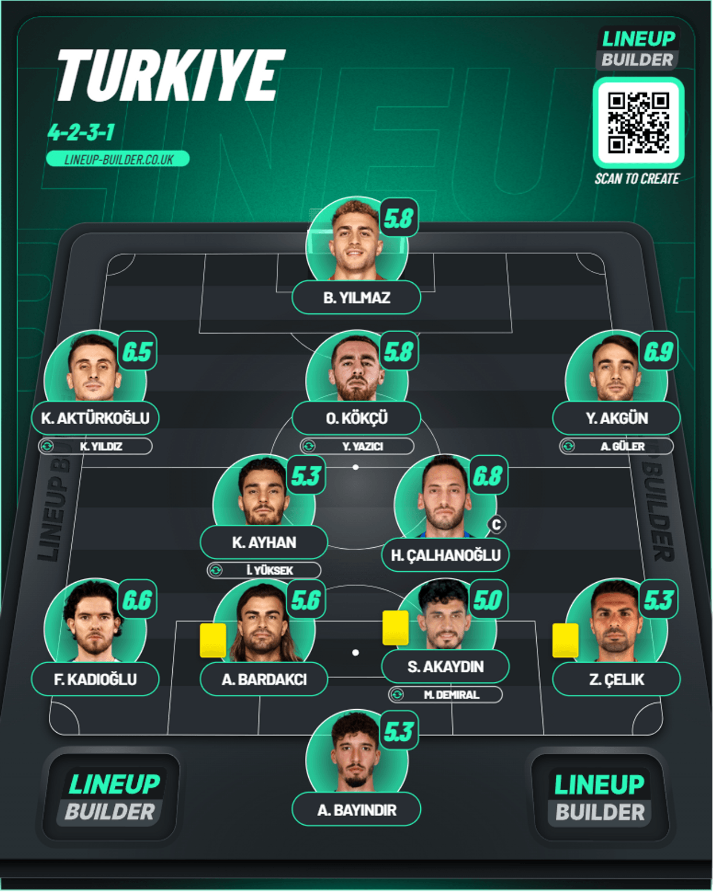

Day 8
Table of Contents
Day 8
Netherlands v France
First 0-0 of the tournament. Robbed by the English ref again. France misfiring along with England. We got our first 0-0 of the tournament and it could have been a win for the Dutch because they had a goal wrongly disallowed. Not even remotely surprised that there was an English referee present who not only took so long but also gave the wrong call ü§¶.
1st Half
Verbruggen was called into action as early as the 3rd minute with a long shot from Griezmann. France will be wondering how they didn’t score when in minute 14 Rabiot played a beautiful one-two with Thuram and he squared it for Griezmann who slipped and missed and got up again and slipped over again üòë. He honestly could’ve gone for it himself instead of tryin that square when you’re that close to the keeper. A few seconds later Griezmann had another chance when Thuram dribbled past the defense well and set him up but his shot was wide. Netherlands were no slouch either and they had a chance when Gakpo cut inside and tried a shot from range but Maignan saved it well. The last viable chance was from France in minute 42 when Rabiot found him with a cross but it was straight at Verbruggen.
2nd Half
Thuram went wide to start from France towards minute 60 after some good play from Rabiot. There was another “How has he not scored that?” when Kante played a great through ball to Griezmann after the ball was initially defended but he controlled it well before absolutely botching his finish. Dembele decided to play hero instead of passing when Griezmann played him on the right and he just shot instead of the pass when other options were available. Then came the moment of controversy in minute 68 when Gakpo played in Depay who held onto it and struck a good shot which was parried by Maignan but it fell to the path of Xavi Simons who made no mistake burying it in the bottom right corner. The goal was ruled out for offside because Dumfries was offside and next to Maignan and the VAR check took so long to confirm that very same decision. Honestly from where I’m seeing it, it’s right at the bottom corner and he couldn’t have saved it even if nobody is there but of course the English referees got to make it all about themselves üôÑ. Just gutted for the Dutch because they were genuinely celebrating so hard.
Player of the Match - N’Golo Kante

2 consecutive player of the match awards. The man is cooking at 33. Like I said the last time he got this, he isn’t built for the fast-paced European game anymore otherwise he’d be in the same vein of form he has been for these 2 matches. He’s the one bright spark in a misfiring France side.
Lineups
Netherlands
France
Georgia v Czechia

Marvelous Mamardashvili. A game that could have gone either way. Czechia fail to make advantage count. An absolutely crazy game. On stats, you’d think Czechia fail to make their advantage coun, but Georgia were no slouch either and this game could have been won by either of them. This result means both these teams have a shot at best 3rd placed team to qualify, so let’s see.
1st Half
We saw an early double chance from Czechia which was expertly denied by Mamardashvili who was on it throughout this game. A throw came long into the Georgia box to Hlozek whose volley was booted away by the keeper but the second shot came and it was saved on reflex. Czechia thought they went ahead when Hlozek managed to bundle in yet another long throw from Coufal but VAR disallowed it due to a handball against the Czechia attacker. Coming towards 30 minutes Mamardashvili had already made 7 saves for Georgia. There was a major chance for Georgia at the end of the half when Kvaratskhelia put the ball in to Kashia who found the feet of Stanek only but VAR intervened to find that Hranac had handballed in the area and looking back on the reply it was very clearly not in a natural position so Georgia were given a penalty and Mikautadze made no mistake with it as he sent Stanek the wrong way and slotted it on the right. Georgia weren’t out of the woods in the half as Souchek played a great ball to find Schick who tried to find the bottom left corner but Mamardashvili was equal to it.
2nd Half
Czechia made their advantage with their chances count finally when in minute 59 from a corner to the near post and Schick was on hand when it struck the back post and he bundled it in past a stranded Mamarfashvili to finally equalise. With Czechia having 12 shots on target out of 27 they just couldn’t find a way past the imposing Mamardashvili and Georgia should’ve actually won it at the death when Czechia got their effort blocked at the edge of the box and Georgia countered with 3 against 1 and it was squared to Lobjanidze who has an easy task but instead he blazed it over. Georgia were ü§è close to winning the whole thing.
Player of the Match - G. Mamardashvili
Really strong performance. A total of 11 saves and bailing out his nation preventing certain goals from Czechia. After what happened against Turkey, this was an absolute wall of a performance to keep his nation in it and they almost got all 3 points.
Lineups
- Pulled from Fotmob
Turkiye v Portugal
Dominant Portugal. Turkiye change an actual winning team. Unselfish Ronaldo üëÄ. An absolutely dominant win. Turkey changing a winning team from their Georgia match helped in some ways too but it was completely dominant. Ronaldo being about the team was actually nice to see as he set up the 3rd goal and with that he’s got yet another record with the most assists in the Euros.
1st Half
We got the first shot on target as early as minute 2 with Ronaldo driving a long shot but it was comfortably held by Bayindir. Bruno had a shot from 20 yards but it was charged down by the Turkiye defense. There was a golden chance from Turkiye when Celik put in a great cross from the right but Akturkoglu couldn’t get a touch to score it. Portugal did make their early domination count when Leao found Mendes on the left and he played a cross which was deflected but it fell to B. Silva who made no mistake and finished it. Then came a moment of absolute confusion when in minute 28 Cancelo was driving forward through the middle and he played an absolutely shocking ball which was intercepted by the defender easily but he decides to play a no look first time pass back to Bayindir and it despite all efforts it still went past the line and with that Own Goal now has 6 in this tournament üòÖ. Costa later on made a save for Portugal from Akturkoglu. B. Silva got another chance from a ball by Cancelo but his shot was wide. This match had a VERY card happy referee and it was so weird because he was genuinely carding everyone including people who actually got the ball.
2nd Half
There was a save again from Costa who had to be alert to stop a shot from Yazici. The third came in the 56th minute when Ronaldo ran onto a long ball and was through one on one but he squared it for Bruno who didn’t miss. That should surely seal their status as the group toppers. Ronaldo did have a chance when B. Silva played a great cross but his jump was wrong and he mistimed the header. There wasn’t much to report on. Turkiye making major changes even though their win against Georgia was comfortable was weird. I really think if you had the likes of Guler and Yildiz you could’ve had a chance against Portugal but they never really recovered from the mistakes of the first half and that’s how it stayed.
Player of the Match - B. Silva
Wasn’t able to get into the game against Czechia but he really showed his quality here and took his goal well and was creating the chances all around. Well rounded from him.
Lineups
Turkiye
